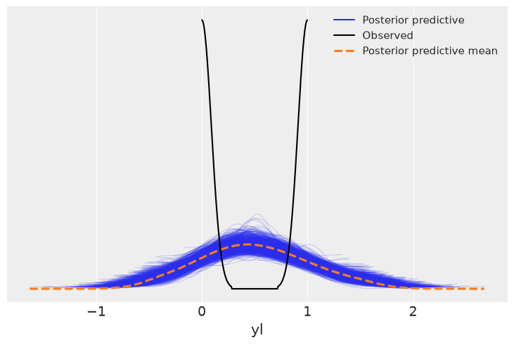
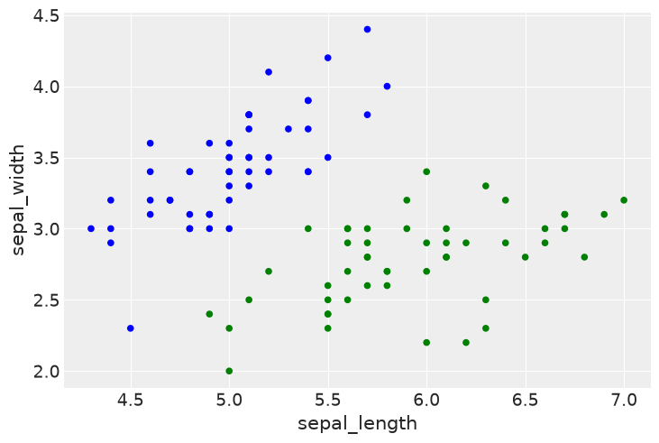
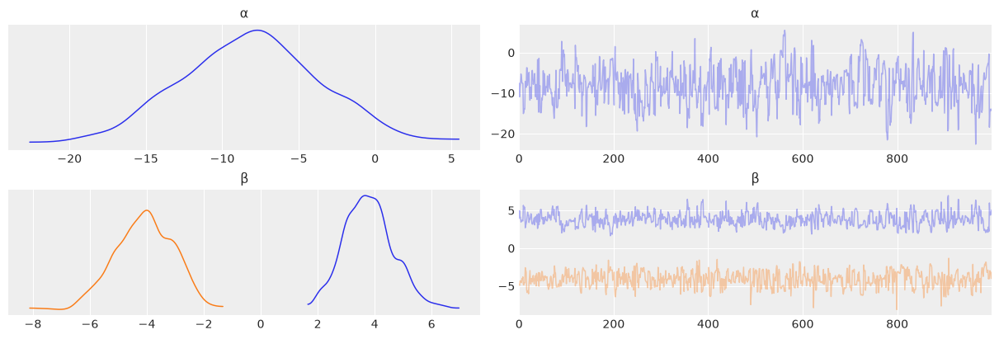
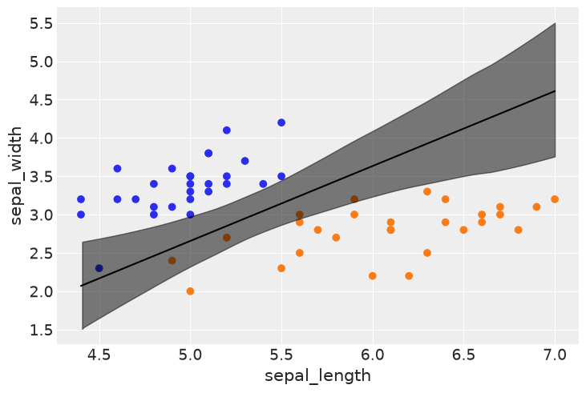
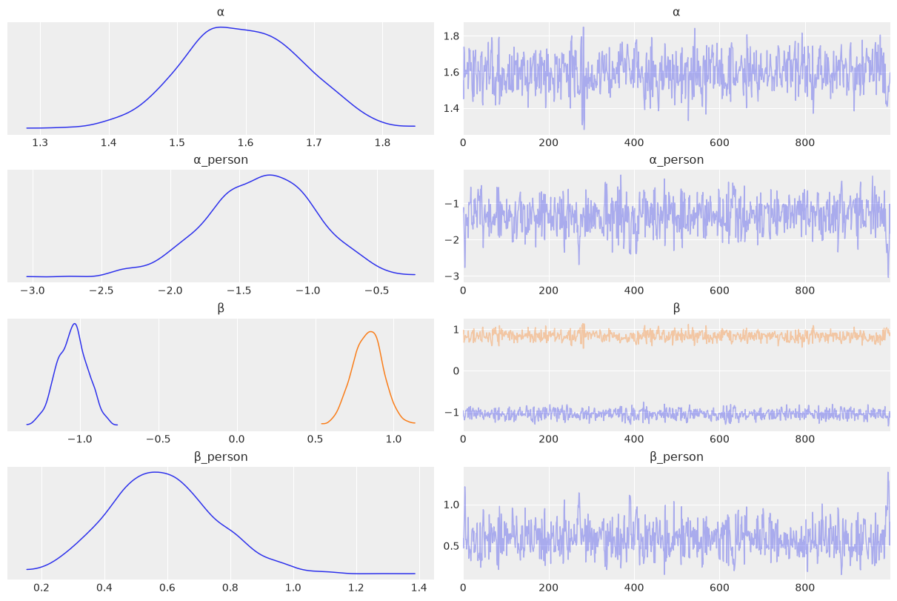
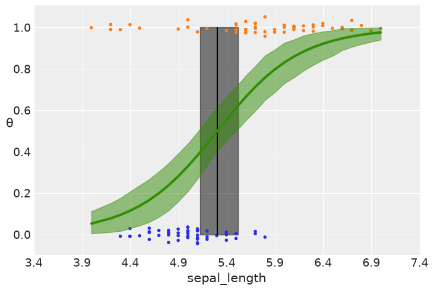

Chapter 4 Exercises#
import os
import warnings
import arviz as az
import matplotlib.pyplot as plt
import numpy as np
import pandas as pd
import seaborn as sns
from scipy.special import expit as logistic
import jax.numpy as jnp
import jax.nn as jnn
from jax import random
import numpyro
import numpyro.distributions as dist
from numpyro.infer import MCMC, NUTS, Predictive
seed = 123
if "SVG" in os.environ:
%config InlineBackend.figure_formats = ["svg"]
warnings.formatwarning = lambda message, category, *args, **kwargs: "{}: {}\n".format(
category.__name__, message
)
az.style.use("arviz-darkgrid")
numpyro.set_platform("cpu")
/home/runner/work/bap-numpyro/bap-numpyro/.venv/lib/python3.13/site-packages/tqdm/auto.py:21: TqdmWarning: IProgress not found. Please update jupyter and ipywidgets. See https://ipywidgets.readthedocs.io/en/stable/user_install.html
from .autonotebook import tqdm as notebook_tqdm
Exercise 1#
Re-run the first model using the petal length and then petal width variables. What are the main differences in the results? How wide or narrow is the 95% HPD interval in each case?
iris = pd.read_csv('../data/iris.csv')
df = iris.query("species == ('setosa', 'versicolor')")
y_0 = jnp.asarray(pd.Categorical(df['species']).codes)
varnames = ['α', 'β', 'bd']
def model_iris(x_c, y=None):
α = numpyro.sample('α', dist.Normal(0., 10.))
β = numpyro.sample('β', dist.Normal(0., 10.))
μ = numpyro.deterministic('μ', α + β * x_c)
θ = numpyro.deterministic('θ', jnn.sigmoid(μ))
numpyro.deterministic('bd', -α / β)
numpyro.sample('yl', dist.Bernoulli(probs=θ), obs=y)
for feature in ["sepal_length", "petal_width", "petal_length"]:
x_0 = jnp.asarray(df[feature].values)
x_c = x_0 - x_0.mean()
mcmc = MCMC(NUTS(model_iris), num_warmup=1000, num_samples=1000)
mcmc.run(random.PRNGKey(seed), x_c=x_c, y=y_0)
idata = az.from_numpyro(mcmc)
print("Feature {} summary".format(feature))
print(az.summary(idata, var_names=varnames, hdi_prob=0.95))
arviz - WARNING - Shape validation failed: input_shape: (1, 1000), minimum_shape: (chains=2, draws=4)
Feature sepal_length summary
mean sd hdi_2.5% hdi_97.5% mcse_mean mcse_sd ess_bulk ess_tail \
α 0.317 0.320 -0.224 0.971 0.012 0.011 674.0 589.0
β 5.393 1.113 3.406 7.660 0.050 0.056 553.0 324.0
bd -0.058 0.059 -0.172 0.048 0.002 0.002 734.0 691.0
r_hat
α NaN
β NaN
bd NaN
arviz - WARNING - Shape validation failed: input_shape: (1, 1000), minimum_shape: (chains=2, draws=4)
Feature petal_width summary
mean sd hdi_2.5% hdi_97.5% mcse_mean mcse_sd ess_bulk \
α 0.591 1.631 -2.734 3.791 0.086 0.077 377.0
β 17.850 5.815 8.363 30.091 0.322 0.263 368.0
bd -0.036 0.085 -0.203 0.122 0.004 0.002 412.0
ess_tail r_hat
α 379.0 NaN
β 449.0 NaN
bd 604.0 NaN
arviz - WARNING - Shape validation failed: input_shape: (1, 1000), minimum_shape: (chains=2, draws=4)
Feature petal_length summary
mean sd hdi_2.5% hdi_97.5% mcse_mean mcse_sd ess_bulk \
α 3.609 3.958 -2.995 11.613 0.260 0.225 263.0
β 13.766 6.065 4.148 26.012 0.472 0.274 169.0
bd -0.270 0.270 -0.758 0.219 0.016 0.007 283.0
ess_tail r_hat
α 244.0 NaN
β 335.0 NaN
bd 503.0 NaN
From the results, we can see that the bd variable’s HPD is the smallest with sepal length, and increases with petal_width and petal_length.
Exercise 2#
Repeat exercise 1, this time using a Student’s t-distribution as a weakly informative prior. Try different values of \(\nu\).
def model_iris_t(x_c, nu, y=None):
α = numpyro.sample('α', dist.StudentT(nu, 0., 10.))
β = numpyro.sample('β', dist.StudentT(nu, 0., 10.))
μ = numpyro.deterministic('μ', α + β * x_c)
θ = numpyro.deterministic('θ', jnn.sigmoid(μ))
numpyro.deterministic('bd', -α / β)
numpyro.sample('yl', dist.Bernoulli(probs=θ), obs=y)
x_0 = jnp.asarray(df["petal_length"].values)
x_c = x_0 - x_0.mean()
for nu in [1, 10, 30]:
mcmc = MCMC(NUTS(model_iris_t), num_warmup=1000, num_samples=1000)
mcmc.run(random.PRNGKey(seed), x_c=x_c, nu=nu, y=y_0)
idata = az.from_numpyro(mcmc)
print(f"Feature petal_length nu {nu} summary")
print(az.summary(idata, var_names=varnames, hdi_prob=0.95))
arviz - WARNING - Shape validation failed: input_shape: (1, 1000), minimum_shape: (chains=2, draws=4)
Feature petal_length nu 1 summary
mean sd hdi_2.5% hdi_97.5% mcse_mean mcse_sd ess_bulk \
α 7.165 18.749 -29.655 55.612 2.475 7.744 60.0
β 387.319 1799.896 3.719 1143.275 404.916 1152.636 9.0
bd -0.166 0.259 -0.788 0.150 0.046 0.022 43.0
ess_tail r_hat
α 45.0 NaN
β 15.0 NaN
bd 249.0 NaN
arviz - WARNING - Shape validation failed: input_shape: (1, 1000), minimum_shape: (chains=2, draws=4)
Feature petal_length nu 10 summary
mean sd hdi_2.5% hdi_97.5% mcse_mean mcse_sd ess_bulk \
α 3.331 4.408 -4.837 11.620 0.343 0.267 174.0
β 15.590 8.139 4.728 33.493 0.762 0.609 121.0
bd -0.240 0.279 -0.820 0.199 0.022 0.009 157.0
ess_tail r_hat
α 309.0 NaN
β 179.0 NaN
bd 403.0 NaN
arviz - WARNING - Shape validation failed: input_shape: (1, 1000), minimum_shape: (chains=2, draws=4)
Feature petal_length nu 30 summary
mean sd hdi_2.5% hdi_97.5% mcse_mean mcse_sd ess_bulk \
α 3.840 4.264 -3.183 12.629 0.308 0.253 217.0
β 14.527 6.299 3.829 26.218 0.505 0.252 157.0
bd -0.277 0.279 -0.836 0.181 0.018 0.008 261.0
ess_tail r_hat
α 187.0 NaN
β 304.0 NaN
bd 449.0 NaN
Exercise 3#
Go back to the first example, the logistic regression for classifying setosa or versicolor given sepal length. Try to solve the same problem using a simple linear regression model, as we saw in chapter 3. How useful is linear regression compared to logistic regression? Can the result be interpreted as a probability?
Tip: check whether the values of \(y\) are restricted to the interval [0,1].
x_n = "sepal_length"
x_0 = jnp.asarray(df[x_n].values)
x_c = x_0 - x_0.mean()
def model_linear(x_c, y=None):
α = numpyro.sample('α', dist.Normal(0., 10.))
β = numpyro.sample('β', dist.Normal(0., 10.))
sd = numpyro.sample('sd', dist.HalfNormal(1.))
μ = α + β * x_c
numpyro.sample('yl', dist.Normal(μ, sd), obs=y)
mcmc_linear = MCMC(NUTS(model_linear), num_warmup=1000, num_samples=1000)
mcmc_linear.run(random.PRNGKey(seed), x_c=x_c, y=y_0.astype(float))
idata_linear = az.from_numpyro(mcmc_linear)
posterior_samples_linear = mcmc_linear.get_samples()
ppc_linear = Predictive(model_linear, posterior_samples=posterior_samples_linear)(
random.PRNGKey(seed + 1), x_c=x_c
)
idata_linear = az.from_numpyro(mcmc_linear, posterior_predictive=ppc_linear)
print(az.summary(idata_linear, hdi_prob=0.95))
arviz - WARNING - Shape validation failed: input_shape: (1, 1000), minimum_shape: (chains=2, draws=4)
mean sd hdi_2.5% hdi_97.5% mcse_mean mcse_sd ess_bulk ess_tail \
sd 0.349 0.024 0.309 0.402 0.001 0.001 908.0 731.0
α 0.499 0.035 0.434 0.571 0.001 0.001 1073.0 744.0
β 0.573 0.052 0.478 0.675 0.002 0.002 800.0 513.0
r_hat
sd NaN
α NaN
β NaN
az.plot_ppc(idata_linear);

From the posterior predictive checks, this model is not very useful. We are trying to estimate the probability of a species given sepal_length, but a number of the posterior predictive check values are below 0 and above 1. As such, the result cannot be interpreted as a probability.
Exercise 4#
In the example from the “Interpreting the coefficients of a logistic regression” section, we changed sepal_length by 1 unit. Using figure 4.6, corroborate that the value of log_odds_versicolor_i corresponds to the value of probability_versicolor_i. Do the same for log_odds_versicolor_f and probability_versicolor_f. Just by noting that log_odds_versicolor_f - log_odds_versicolor_i is negative, what can you say about the probability? Use figure 4.6 to help you. Is this result clear to you from the definition of log-odds?
df = iris.query("species == ('setosa', 'versicolor')")
y_1 = jnp.asarray(pd.Categorical(df['species']).codes)
x_n = ['sepal_length', 'sepal_width']
x_1 = jnp.asarray(df[x_n].values)
def model_1(x, y=None):
α = numpyro.sample('α', dist.Normal(0., 10.))
β = numpyro.sample('β', dist.Normal(jnp.zeros(len(x_n)), 2. * jnp.ones(len(x_n))))
μ = α + jnp.dot(x, β)
θ = numpyro.deterministic('θ', jnn.sigmoid(μ))
numpyro.deterministic('bd', -α / β[1] - β[0] / β[1] * x[:, 0])
numpyro.sample('yl', dist.Bernoulli(probs=θ), obs=y)
mcmc_1 = MCMC(NUTS(model_1), num_warmup=1000, num_samples=2000)
mcmc_1.run(random.PRNGKey(seed), x=x_1, y=y_1)
idata_1 = az.from_numpyro(mcmc_1)
varnames_1 = ['α', 'β']
summary = az.summary(idata_1, var_names=varnames_1)
summary
arviz - WARNING - Shape validation failed: input_shape: (1, 2000), minimum_shape: (chains=2, draws=4)
| mean | sd | hdi_3% | hdi_97% | mcse_mean | mcse_sd | ess_bulk | ess_tail | r_hat | |
|---|---|---|---|---|---|---|---|---|---|
| α | -8.93 | 4.508 | -16.995 | 0.159 | 0.172 | 0.167 | 689.0 | 564.0 | NaN |
| β[0] | 4.60 | 0.876 | 2.851 | 6.179 | 0.037 | 0.026 | 569.0 | 644.0 | NaN |
| β[1] | -5.13 | 0.951 | -6.997 | -3.540 | 0.037 | 0.028 | 662.0 | 699.0 | NaN |
x_1 = 4.5 # sepal_length
x_2 = 3 # sepal_width
log_odds_versicolor_i = (summary['mean'] * [1, x_1, x_2]).sum()
probability_versicolor_i = logistic(log_odds_versicolor_i)
log_odds_versicolor_f = (summary['mean'] * [1, x_1, x_2+1]).sum()
probability_versicolor_f = logistic(log_odds_versicolor_f)
log_odds_versicolor_f - log_odds_versicolor_i, probability_versicolor_f - probability_versicolor_i
(np.float64(-5.129999999999999), np.float64(-0.025925638927280385))
The value of -5.22 is consistent with the summary and our “hand check”. A log odds value of -5.22 means that as \(x_2\) increases by one unit, the probability that the species is versicolor decreases. Or, equivalently, as sepal width increases, the probability that the flower is versicolor decreases.
We can verify this with a quick plot:
colors = df["species"].replace({'setosa':"blue", 'versicolor':"green"})
df.plot(kind="scatter", x="sepal_length", y="sepal_width", c=colors);

We see that, as sepal width increases from 3 to 4, we get further away from the green dots, reducing the probability that the flower we’re seeing is of the versicolor species.
Question 5#
Use the same example from the previous exercise. For model_1, check how much the log-odds change when increasing sepal_length from 5.5 to 6.5 (spoiler: it should be 4.66). How much does the probability change? How does this increase compared to when we increase sepal_length from 4.5 to 5.5?
# Values for sepal length are directly added in the log_odds_line
x_1 = 4.5 # sepal_length
x_2 = 3 # sepal_width
for i in (0,1):
log_odds_versicolor_i = (summary['mean'] * [1, x_1 + i, x_2]).sum()
probability_versicolor_i = logistic(log_odds_versicolor_i)
log_odds_versicolor_f = (summary['mean'] * [1, x_1 + i + 1, x_2]).sum()
probability_versicolor_f = logistic(log_odds_versicolor_f)
print(f"""sepal_length_i {x_1 + i}, sepal_length_f {x_1 + i + 1}
Log Odds Change {log_odds_versicolor_f - log_odds_versicolor_i}
Probability Change {probability_versicolor_f - probability_versicolor_i}
""")
sepal_length_i 4.5, sepal_length_f 5.5
Log Odds Change 4.599999999999998
Probability Change 0.701024141194746
sepal_length_i 5.5, sepal_length_f 6.5
Log Odds Change 4.600000000000001
Probability Change 0.2691333969003704
From the calculation above we see that while the log-odds change stays constant, as it should in linear regression, the probability change is not as large from 5.5 to 6.5 as it is from 4.5 to 5.5. Looking at the graphic this intuitively makes sense as well. When sepal length is at 4.5, the chance that the species is versicolor is very small. When sepal length jumps to 5.5, this probability gets a lot bigger. This means that subsequently going from 5.5 to 6.5 still increases the probability of versicolor, but not as much - because, well, at 5.5 there is already a good chance that the species we’re seeing is versicolor.
Exercise 6#
In the example for dealing with unbalanced data, change df = df[45:] to df = df[22:78]. This will keep roughly the same number of data points, but now the classes will be balanced. Compare the new result with the previous ones. Which one is more similar to the example using the complete dataset?
df = iris.query("species == ('setosa', 'versicolor')")
df = df[22:78]
y_3 = jnp.asarray(pd.Categorical(df['species']).codes)
x_n = ['sepal_length', 'sepal_width']
x_3 = jnp.asarray(df[x_n].values)
varnames = ['α', 'β']
def model_3(x, y=None):
α = numpyro.sample('α', dist.Normal(0., 10.))
β = numpyro.sample('β', dist.Normal(jnp.zeros(len(x_n)), 2. * jnp.ones(len(x_n))))
μ = α + jnp.dot(x, β)
θ = jnn.sigmoid(μ)
numpyro.deterministic('bd', -α / β[1] - β[0] / β[1] * x[:, 0])
numpyro.sample('yl', dist.Bernoulli(probs=θ), obs=y)
mcmc_3 = MCMC(NUTS(model_3), num_warmup=1000, num_samples=1000)
mcmc_3.run(random.PRNGKey(seed), x=x_3, y=y_3)
idata_3 = az.from_numpyro(mcmc_3)
az.plot_trace(idata_3, var_names=varnames);

samples_3 = mcmc_3.get_samples()
x_3_np = np.array(x_3)
y_3_np = np.array(y_3)
idx = np.argsort(x_3_np[:, 0])
bd_mean = np.array(samples_3['bd']).mean(0)[idx]
plt.scatter(x_3_np[:, 0], x_3_np[:, 1], c=[f'C{x}' for x in y_3_np])
plt.plot(x_3_np[:, 0][idx], bd_mean, color='k')
az.plot_hdi(x_3_np[:, 0], np.array(samples_3['bd']), color='k')
plt.xlabel(x_n[0])
plt.ylabel(x_n[1]);
FutureWarning: hdi currently interprets 2d data as (draw, shape) but this will change in a future release to (chain, draw) for coherence with other functions

The decision boundary in this plot looks more like the unfiltered dataset as the blue data points are largely not contained in the boundary decision’s 95% HPD. This indicates that the balanced model, even with less data points, is better able to distinguish between classes.
Exercise 7#
Suppose instead of a softmax regression we use a simple linear model by coding setosa = 0, versicolor = 1 and virginica = 2. Under the simple linear regression model, what will happen if we switch the coding? Will we get the same or different results?
Lets run the model to have data points for a discussion:
iris_full = sns.load_dataset('iris')
y_s = jnp.asarray(pd.Categorical(iris_full['species']).codes)
x_cols = iris_full.columns[:-1]
x_s_np = iris_full[x_cols].values
x_s = jnp.asarray((x_s_np - x_s_np.mean(axis=0)) / x_s_np.std(axis=0))
def model_s(x, y=None):
α = numpyro.sample('α', dist.Normal(jnp.zeros(3), 5. * jnp.ones(3)))
β = numpyro.sample('β', dist.Normal(jnp.zeros((4, 3)), 5. * jnp.ones((4, 3))))
μ = numpyro.deterministic('μ', α + jnp.dot(x, β))
numpyro.sample('yl', dist.Categorical(logits=μ), obs=y)
mcmc_s = MCMC(NUTS(model_s), num_warmup=1000, num_samples=2000)
mcmc_s.run(random.PRNGKey(seed), x=x_s, y=y_s)
idata_s = az.from_numpyro(mcmc_s)
samples_s = mcmc_s.get_samples()
print(samples_s['μ'].shape)
print(samples_s['μ'][:, 0, 0].mean())
(2000, 150, 3)
20.501982
data_pred = np.array(samples_s['μ']).mean(0)
data_pred[:5]
array([[ 20.501991 , 6.1050096, -27.413086 ],
[ 17.452496 , 6.809501 , -24.769207 ],
[ 19.88487 , 5.922171 , -26.501223 ],
[ 18.732628 , 5.7553477, -25.131733 ],
[ 21.537008 , 5.6211643, -28.05666 ]], dtype=float32)
Conceptual Understanding#
Note the shape of the trace. The dimensions should read as follows: we have 4000 estimations of the 3 softmax class values for each of the 150 rows in the dataset.
Discussion#
If we changed the softmax model to a linear regression model a couple things would change. First, the interpretation of the final output would be different. A softmax prediction estimates the probability of each class, whereas a linear regression would just provide one number as an estimate for the class. The other problem is that a linear regression would output continous values across all real numbers, and how to define when one class starts and another ends is unclear.
Exercise 8#
Compare the likelihood of the logistic model versus the likelihood of the LDA model. Use the sample_posterior_predictive function to generate predicted data and compare the types of data you get for both cases. Be sure you understand the difference between the types of data the model predicts.
df = iris.query("species == ('setosa', 'versicolor')")
y_8 = jnp.asarray(pd.Categorical(df['species']).codes)
x_n8 = 'sepal_length'
x_8 = jnp.asarray(df[x_n8].values)
Logistic Regression model (Discriminative)
def logistic_model(x, y=None):
α = numpyro.sample('α', dist.Normal(0., 10.))
β = numpyro.sample('β', dist.Normal(0., 10.))
μ = α + β * x
θ = numpyro.deterministic('θ', jnn.sigmoid(μ))
numpyro.deterministic('bd', -α / β)
numpyro.sample('y1', dist.Bernoulli(probs=θ), obs=y)
mcmc_logistic = MCMC(NUTS(logistic_model), num_warmup=1000, num_samples=2000)
mcmc_logistic.run(random.PRNGKey(seed), x=x_8, y=y_8)
posterior_samples_logistic = mcmc_logistic.get_samples()
ppc_logistic = Predictive(logistic_model, posterior_samples=posterior_samples_logistic)(
random.PRNGKey(seed + 1), x=x_8
)
idata_logistic = az.from_numpyro(mcmc_logistic, posterior_predictive=ppc_logistic)
Linear Discriminant Analysis (Discriminative)
def lda_model(y_setosa=None, y_versicolor=None):
σ = numpyro.sample('σ', dist.HalfNormal(10.))
μ = numpyro.sample('μ', dist.Normal(jnp.zeros(2), 10. * jnp.ones(2)))
numpyro.deterministic('bd', (μ[0] + μ[1]) / 2.)
numpyro.sample('setosa', dist.Normal(μ[0], σ), obs=y_setosa)
numpyro.sample('versicolor', dist.Normal(μ[1], σ), obs=y_versicolor)
x_8_np = np.array(x_8)
mcmc_lda = MCMC(NUTS(lda_model), num_warmup=1000, num_samples=1000)
mcmc_lda.run(
random.PRNGKey(seed),
y_setosa=jnp.asarray(x_8_np[:50]),
y_versicolor=jnp.asarray(x_8_np[50:]),
)
posterior_samples_lda = mcmc_lda.get_samples()
ppc_lda = Predictive(lda_model, posterior_samples=posterior_samples_lda)(
random.PRNGKey(seed + 1),
)
idata_lda = az.from_numpyro(mcmc_lda, posterior_predictive=ppc_lda)
The likelihood of the logisitic regression model is as follows
and the likelihood of the Linear Discriminative Analysis are
\begin{eqnarray} Versicolor_{sepal_length} \text{~} Normal(\mu_0, \sigma) \newline Setosa_{sepal_length} \text{~} Normal(\mu_1, \sigma) \end{eqnarray}
In the logistic regression we are not estimating the properties of the sepal length. We are merely fitting parameters of the inverse link function. In the LDA model we are estimating the sepal length distributions directly.
np.array(ppc_logistic["y1"])[0]
array([1, 0, 0, 0, 0, 0, 0, 0, 0, 0, 1, 0, 0, 0, 1, 0, 1, 0, 1, 1, 0, 0,
0, 1, 0, 0, 0, 0, 0, 0, 0, 1, 1, 0, 0, 0, 1, 1, 0, 0, 0, 0, 0, 0,
0, 0, 0, 0, 0, 0, 1, 1, 1, 0, 1, 1, 1, 0, 1, 0, 0, 1, 1, 1, 1, 1,
1, 0, 1, 1, 1, 1, 1, 1, 1, 1, 1, 1, 1, 1, 1, 1, 1, 1, 0, 1, 1, 1,
1, 1, 1, 1, 1, 0, 1, 1, 1, 0, 0, 1], dtype=int32)
np.array(ppc_lda["setosa"])[0]
np.float32(3.9909701)
When comparing the posterior predictive, it can be seen that the logistic model is binary, estimating either 0 or 1, while the LDA model has real numbers that generally look like sepal lengths. This follows our understandings of the models: the logistic regression makes predictions as to which class a particular sepal length belongs to, whereas the LDA model makes predictions about the sepal lengths directly.
Exercise 9#
Using the fish data, extend the ZIP_reg model to include the persons variable as part of a linear model. Include this variable to model the number of extra zeros. You should get a model that includes two linear models: one connecting the number of children and the presence/absence of a camper to the Poisson rate (as in the example we saw), and another connecting the number of persons to the \(\psi\) variable. For the second case, you will need a logistic inverse link!
fish_data = pd.read_csv('../data/fish.csv')
child = jnp.asarray(fish_data['child'].values, dtype=float)
camper = jnp.asarray(fish_data['camper'].values, dtype=float)
persons = jnp.asarray(fish_data['persons'].values, dtype=float)
count = jnp.asarray(fish_data['count'].values, dtype=int)
def model_zip_reg(child, camper, persons, y=None):
α = numpyro.sample('α', dist.Normal(0., 10.))
β = numpyro.sample('β', dist.Normal(jnp.zeros(2), 10. * jnp.ones(2)))
θ = jnp.exp(α + β[0] * child + β[1] * camper)
α_person = numpyro.sample('α_person', dist.Normal(0., 10.))
β_person = numpyro.sample('β_person', dist.Normal(0., 10.))
ψ = jnn.sigmoid(α_person + β_person * persons)
numpyro.sample('yl', dist.ZeroInflatedPoisson(gate=1. - ψ, rate=θ), obs=y)
mcmc_zip_reg = MCMC(NUTS(model_zip_reg), num_warmup=1000, num_samples=1000)
mcmc_zip_reg.run(random.PRNGKey(seed), child=child, camper=camper, persons=persons, y=count)
idata_zip_reg = az.from_numpyro(mcmc_zip_reg)
az.plot_trace(idata_zip_reg);

Exercise 10#
Use the data for the robust logistic example to feed a non-robust logistic regression model and to check that the outliers actually affected the results. You may want to add or remove outliers to better understand the effect of the estimation on a logistic regression and the robustness of the model introduced in this chapter.
iris = sns.load_dataset("iris")
df = iris.query("species == ('setosa', 'versicolor')")
y_0 = pd.Categorical(df['species']).codes
x_n = 'sepal_length'
x_0 = df[x_n].values
y_0 = np.concatenate((y_0, np.ones(6, dtype=int)))
x_0 = np.concatenate((x_0, [4.2, 4.5, 4.0, 4.3, 4.2, 4.4]))
x_c = x_0 - x_0.mean()
plt.plot(x_c, y_0, 'o', color='k');

Let’s take the robust logistic regression from the chapter and make it non robust:
x_c_10 = jnp.asarray(x_c)
y_0_10 = jnp.asarray(y_0)
def model_non_rlg(x_c, y=None):
α = numpyro.sample('α', dist.Normal(0., 10.))
β = numpyro.sample('β', dist.Normal(0., 10.))
μ = α + β * x_c
θ = numpyro.deterministic('θ', jnn.sigmoid(μ))
numpyro.deterministic('bd', -α / β)
numpyro.sample('y', dist.Bernoulli(probs=θ), obs=y)
mcmc_rlg = MCMC(NUTS(model_non_rlg), num_warmup=1000, num_samples=1000)
mcmc_rlg.run(random.PRNGKey(seed), x_c=x_c_10, y=y_0_10)
idata_rlg = az.from_numpyro(mcmc_rlg)
varnames_rlg = ['α', 'β', 'bd']
az.summary(idata_rlg, var_names=varnames_rlg)
arviz - WARNING - Shape validation failed: input_shape: (1, 1000), minimum_shape: (chains=2, draws=4)
| mean | sd | hdi_3% | hdi_97% | mcse_mean | mcse_sd | ess_bulk | ess_tail | r_hat | |
|---|---|---|---|---|---|---|---|---|---|
| α | 0.226 | 0.234 | -0.183 | 0.693 | 0.008 | 0.007 | 836.0 | 622.0 | NaN |
| β | 2.364 | 0.490 | 1.513 | 3.318 | 0.019 | 0.016 | 658.0 | 564.0 | NaN |
| bd | -0.097 | 0.102 | -0.274 | 0.121 | 0.003 | 0.003 | 880.0 | 581.0 | NaN |
samples_rlg = mcmc_rlg.get_samples()
theta = np.array(samples_rlg['θ']).mean(axis=0)
bd_samples = np.array(samples_rlg['bd'])
x_c_np = np.array(x_c_10)
y_0_np = np.array(y_0_10)
idx_sorted = np.argsort(x_c_np)
plt.vlines(bd_samples.mean(), 0, 1, color='k')
bd_hdi = az.hdi(bd_samples)
plt.fill_betweenx([0, 1], bd_hdi[0], bd_hdi[1], color='k', alpha=0.5)
plt.scatter(x_c_np, np.random.normal(y_0_np, 0.02), marker='.', color=[f'C{x}' for x in y_0_np])
plt.plot(x_c_np[idx_sorted], theta[idx_sorted], color='C2', lw=3)
theta_hdi = az.hdi(np.array(samples_rlg['θ']))[idx_sorted]
plt.fill_between(x_c_np[idx_sorted], theta_hdi[:, 0], theta_hdi[:, 1], color='C2', alpha=0.5)
plt.xlabel('sepal_length')
plt.ylabel('θ', rotation=0)
# Restore original scale on x-axis: x_c_10 = x_0 - x_0.mean(), x_0 from cell-48
x_0_mean = float(x_0.mean())
locs, _ = plt.xticks()
plt.xticks(locs, np.round(locs + x_0_mean, 1));
FutureWarning: hdi currently interprets 2d data as (draw, shape) but this will change in a future release to (chain, draw) for coherence with other functions

Compare this plot to figure 4.13. Note that the HPD for the decision boundary is wider, reflecting the additional uncertainty. This is also reflected in the slope which is more gradual. This is reflected both in the plot, but also the beta parameter (15.77 for robust model versus 2.38 for the non-robust model).
Exercise 11#
Read and run the following notebooks from PyMC3’s documentation: